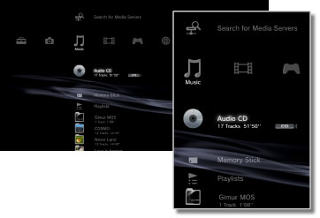

Music > Music category
Music category
The following icons are displayed under  (Music). The icons displayed vary depending on the conditions of use.
(Music). The icons displayed vary depending on the conditions of use.

 |
(Title name) | Display the mini-size control panel. This icon is only displayed when music content is being played. |
|---|---|---|
 |
Search for Media Servers | Initiate a search for DLNA Media Servers that are connected on the same network. |
 |
Media Server | Connect to DLNA Media Servers and play the music that is stored there. The icon displayed varies depending on the type of server. |
 |
(title name) | Play a Super Audio CD. |
 |
(CD title) | Play an audio CD. |
 |
Data Disc | Play music files saved on compatible, recordable disc media such as a CD-R or DVD-R. |
|
DSD Disc | Play DSD-format music files saved on compatible disc media, such as a DVD-R. |
 |
Memory Stick™ | Play music files saved on Memory Stick™ media.* |
 |
SD Memory Card | Play music files saved on an SD Memory Card.* |
 |
CompactFlash® | Play music files saved on CompactFlash®.* |
 |
PSP™ (PlayStation®Portable) | Play music files saved on a PSP™ system's Memory Stick™ media. |
 |
PSP™(PlayStation®Portable) | Play music files saved in the system storage of the PSP™go system. |
 |
Digital Camera | Play music files saved on a digital camera. |
 |
WALKMAN®/ATRAC Audio Device (WALKMAN®) | Play music files saved on a WALKMAN®/ATRAC Audio Device (WALKMAN®). |
 |
ATRAC Audio Device | Play music files saved on an ATRAC audio device. |
 |
USB Device | Play music files saved on a USB mass storage device. |
 |
Playlists | You can create playlists or edit or play playlists that have been created. |
 |
(folder) | This icon is displayed for folders that were created on the storage media using a PC. |
 |
(files saved on the hard disk) | Play music files saved on the PS3™ system's hard disk. When image data is available, thumbnail images are displayed. |
| * |
An appropriate USB adaptor (not included) is required to use storage media with some models of the PS3™ system. When used with a USB adaptor, storage media will be displayed as |
|---|
 (USB Device).
(USB Device).Hints
- For details about DLNA, see
 (Settings) >
(Settings) >  (Network Settings) > [Media Server Connection] in this guide.
(Network Settings) > [Media Server Connection] in this guide. - In rare instances, discs and other media may not operate properly when played on the PS3™ system. This is primarily due to variations in the manufacturing process or encoding of the software.
- When audio from Super Audio CDs is output from the system's digital out (optical) connector, simple playback (playback at 44.1 kHz using 16 bits) occurs.
Notice
Super Audio CDs cannot be played on some PS3™ systems. For details, refer to [Types of Playable Discs].